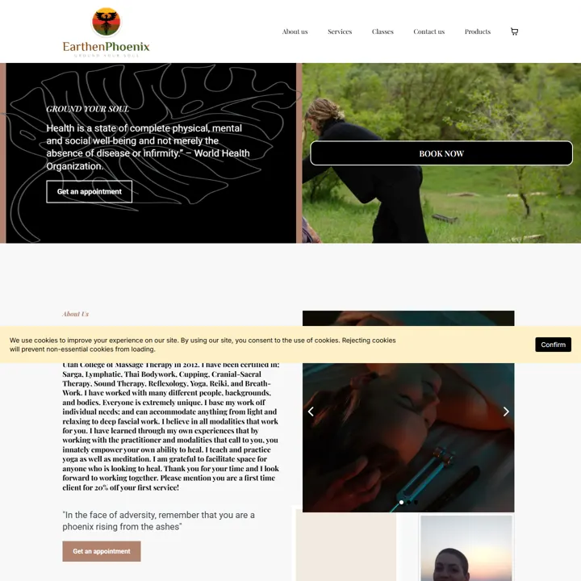
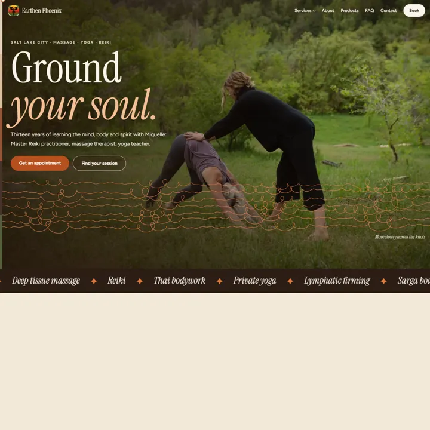
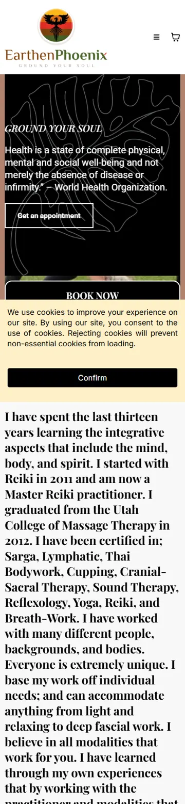
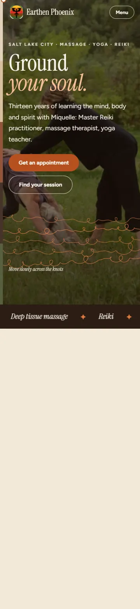

Review page · draft for approval
The accepted home design, grown into a complete 17-page website. Every service now has its own page and its own animation drawn from what happens in the session, plus a pressure finder, a price table, an FAQ and a working contact form. Every fact comes from earthenphoenix.com and its booking page.
Open the website



Each animation shows what the session actually does. They run only on screen, pause in background tabs, and fall back to a still frame for visitors who turn motion off.
Site-wide: the five logo bands fall like strata between pages, a left-edge strata gauge tracks scroll, and the home hero's "Release" lines loosen under the cursor.
| Issue on the current site | What the new site does | Status |
|---|---|---|
| One services list on the booking page; no page per service | 10 service pages, each with an answer-first opening, prices, FAQ, Service + FAQ schema and related sessions | Done |
| Hard to tell which massage to pick | Pressure finder on Sessions & prices; deep tissue vs Sarga vs Swedish cross-linked | Done |
| Prices scattered, and the yoga price conflicts ($120 vs $140) | One price table from the booking page; $140 used everywhere | Client to confirm |
| Cookie banner covers content; long unbroken text blocks | No tracking, so no banner; short sections, her own words kept | Done |
| No FAQ, no structured data | FAQ page plus per-service FAQs, LocalBusiness/Service/FAQ/Breadcrumb schema, sitemap, robots, llms.txt | Done |
| Contact page has no form | Form writes the message into the visitor's email or text app; GHL form can replace it | Done |
| Booking page lives on the same domain | Keep the GHL calendar on a subdomain (or embed it) before launch; one constant to change | Needs developer |
Built on the "come back to earth" direction already approved: the page descends from sand to sage like the logo's bands, with one ember accent. Type is Instrument Serif (display) and Figtree (text). All photos are her own.
References studied (for polish only, not copied): McGarr Massage Therapy (Awwwards-listed), Mountain Rose Herbs (her herb supplier), Alo Moves. Aesop, Six Senses and Body Freedom blocked automated access.